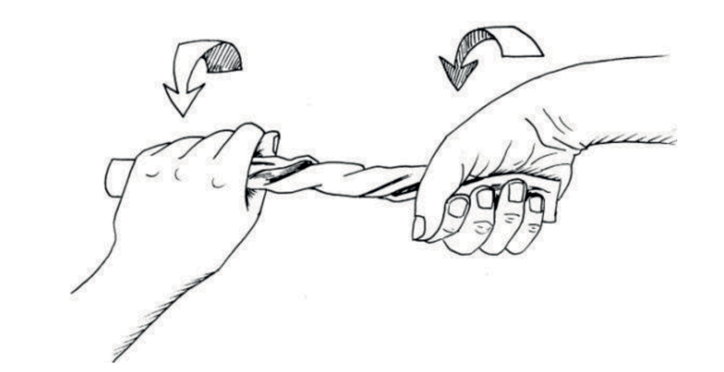
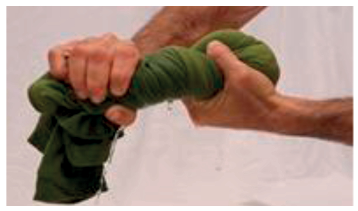

<div class="container">
  <div id="contents" class="col-md-12 main-content"><h1 xmlns="http://www.w3.org/1999/xhtml" id="toc-id-7">Structures,forces and materials</h1>
    <p xmlns="http://www.w3.org/1999/xhtml" class="x--Body-opener">In this chapter, you will learn about
    the forces that act on structures and can break them. You will
    see how structures and parts of structures can be strengthened.
    You will also learn about different materials that are used in
    structures, and how materials differ from each other.</p>

<figure xmlns="http://www.w3.org/1999/xhtml"><p class="x--Body-Text"><span></span> </p>
<figcaption><p>Figure 1: This bridge cannot withstand the
forces acting on it.</p></figcaption></figure><figure xmlns="http://www.w3.org/1999/xhtml"><p class="Normal"><span></span> </p>
<figcaption><p>Figure 2: If the house is not strong
enough, the wind may break it apart.</p></figcaption></figure><figure xmlns="http://www.w3.org/1999/xhtml"><p class="Normal"><span></span> </p>
<figcaption><p>Figure 3: Roof sheets come in different
shapes</p></figcaption></figure><h2 xmlns="http://www.w3.org/1999/xhtml" id="toc-id-8">Forces act in different places</h2>

    <h3 xmlns="http://www.w3.org/1999/xhtml" class="x--Head-investigation">Identify and analyse forces</h3>

    <p xmlns="http://www.w3.org/1999/xhtml" class="x--Body-text-1-3 para-style-override-25">The weight
    of the boy in Figure 4 presses down on the chair as the arrow
    shows.</p>

    <p xmlns="http://www.w3.org/1999/xhtml" class="x--Body-indent-1-3 para-style-override-25">When one
    object pushes against another object, we say that a force is
    <span class="char-style-override-1"><b>exerted on</b></span> the
    object. In this case, you can say that the boy <span class="char-style-override-1"><b>exerts</b></span> a downward <span class="char-style-override-1"><b>force</b></span> on the chair, or that
    there is a downward <span class="char-style-override-1"><b>load</b></span> on the chair.</p>

    <ol xmlns="http://www.w3.org/1999/xhtml"><li>
    <p class="x--Body-investigation-hanging--1-3- para-style-override-26">
    In each of the pictures on this page and the next, make an
    arrow to show how the load acts on the structure.</p>

    <div>
      <figure>
	<div class="frame-4">
	  
	</div>
	<figcaption>
	  <p>Figure 4: The boy sits still on the chair.</p>
	</figcaption>
      </figure>
    </div>
    <figure>
      <p class="x--Body-Text">
	<span>
	  
	</span>
	<span class="char-style-override-2"/>
      </p>
      <figcaption>
	<p>Figure 5: A man walking on a roof.</p>
      </figcaption>
    </figure>
    <figure>
      <div class="frame-4">
	
      </div>
      <figcaption>
	<p>Figure 6: A solar heating system on a
	roof.</p>
      </figcaption>
    </figure>
  </li>
  <li>
    <ol>
      <li>
	<p class="x--Body-investigation-hanging">  Is the load on
	  the roof in Figure 5 always in the same place? Why do you say
	  so?</p>
	  <hr/>
	</li>
	<li>
	  <p class="x--Body-investigation-hanging-a-"> Is the load on
	    the roof in Figure 6 always in the same place? Why do you say
	    so?</p>
	    <hr/>
	  </li>
	  <li>
    <p class="x--Body-investigation-hanging-a-"> Are the loads
    on the bridge in Figure 7 always in the same place? Why do you
      say so?</p><hr/></li></ol></li></ol>

    
    <figure xmlns="http://www.w3.org/1999/xhtml"><p class="T-6point"><span></span> </p>
<figcaption><p>Figure 7: Vehicle passing over a bridge.</p>
</figcaption>
</figure>


<div xmlns="http://www.w3.org/1999/xhtml" class="note">
       
        <p>As long as a person sits still on a chair, the force on
the chair remains in the same place. This is called a
<b>stationary</b> or a <b>static force</b>.
        </p>
        
    </div>
    
    <ol xmlns="http://www.w3.org/1999/xhtml"> <li value="3">
    <p class="x--Body-investigation-hanging">In the above
    picture, the truck and the car exert forces on the bridge. Can
    these forces also be called static? Explain why you say so.</p>
    <hr/></li></ol>
    
    <div xmlns="http://www.w3.org/1999/xhtml" class="note">
     <p>When a moving object exerts a force on another
object, you can say that the force is <b>dynamic</b>.
       </p>
    </div>

 <ol xmlns="http://www.w3.org/1999/xhtml"><li value="4">
    <p class="x--Body-investigation-hanging"> In each of the
    following cases, state whether the force exerted on the table
    is static or dynamic. Explain why you say so in each case.</p>

    <ol>
      <li>
	<p class="x--Body-investigation-hanging-a-"> A pot of
	flowers standing on the table.</p>
	<hr/>
      </li>
      <li>
	<p class="x--Body-investigation-hanging-a- para-style-override-28"> A
	cat walking on the table.</p>
          <hr/>
        </li>
        <li>
	  <p class="x--Body-investigation-hanging-a-"> A boy rolling a
	  soccer ball over the table.</p>
	  <hr/>
	</li>
          <li>
    <p class="x--Body-investigation-hanging-a-"> A man scrubbing
    the table.</p><hr/></li></ol></li>
    
    <li>
    <p class="x--Body-investigation-hanging"> What is the
    difference between the loads exerted on the two tables
    below?</p>
    <hr/></li></ol>
      
   <div xmlns="http://www.w3.org/1999/xhtml">   
     <figure><div class="frame-4"></div>
<figcaption><p>Figure 8: Different ways to put pots on a
table.</p></figcaption>
</figure>
</div>

  

    <p xmlns="http://www.w3.org/1999/xhtml" class="x--Body-Text">Look at the different ways in which the
    two trucks below are loaded. On the one truck, the drums exert
    force everywhere on the cargo deck of the truck. On the other
    truck, the load is just one big drum. The single drum exerts
    force on a small part of the cargo deck.</p>
    
<figure xmlns="http://www.w3.org/1999/xhtml"><p class="x--Body-Text"><span></span> </p>
<figcaption><p>Figure 9: Different kinds of load on two
trucks.</p></figcaption></figure><div xmlns="http://www.w3.org/1999/xhtml" class="note">
      <p>A load that exerts an equal force over the whole
structure that supports it, is called an <b>even</b> load.
A load that mainly exerts a force on one part of the
structure that supports it, is called an <b>uneven load</b>.
       </p>
    </div>

 <ol xmlns="http://www.w3.org/1999/xhtml"><li value="6">
    <p class="x--Body-investigation-hanging"> Think of a house
    with a zinc roof and the forces that the sheets exert on the
    roof structure.</p>

    <ol><li>
    <p class="x--Body-investigation-hanging-a-"> Is the load
    even or uneven? Why do you say so?</p><hr/></li>
    <li>
    <p class="x--Body-investigation-hanging-a-"> Is the load
    static or dynamic? Why do you say so?</p><hr/></li>
    </ol></li><li>
    <p class="x--Body-investigation-hanging"> Think of people
    climbing up and down wooden steps.</p>

    <ol><li>
    <p class="x--Body-investigation-hanging-a-"> Is the load
    even or uneven? Why do you say so?</p><hr/></li>

    <li>
    <p class="x--Body-investigation-hanging-a-"> Is the load
    static or dynamic? Why do you say so?</p><hr/>
    </li>
    </ol>
    </li>
    <li>
    <p class="x--Body-investigation-hanging"> You have to design
    two wooden tables, and you are requested to use as little wood
    as possible. For the one table, the design brief states that
    the load on the table will always be static and even. The
    design brief for the other table states that it has to carry
    the same weight as the first table, but the load will sometimes
    be dynamic and uneven. Describe how your designs for the two
    tables will differ, and explain why.</p>
    <hr/></li></ol>
    
    <h2 xmlns="http://www.w3.org/1999/xhtml" id="toc-id-9">Forces act in different ways</h2>

    <p xmlns="http://www.w3.org/1999/xhtml" class="x--Body-text-1-3 para-style-override-14">Forces can
    act in the following ways on structures or parts of
    structures:</p>

    <div xmlns="http://www.w3.org/1999/xhtml" class="note">
     

      <ul><li class="x--Body-text-bullet"><span class="char-style-override-4"/>
        tension,</li>

        <li class="x--Body-text-bullet"><span class="char-style-override-4"/>
        torsion,</li>

        <li class="x--Body-text-bullet"><span class="char-style-override-4"/>
        compression,</li>

        <li class="x--Body-text-bullet"><span class="char-style-override-4"/> shear,
        and</li>

        <li class="x--Body-text-bullet"><span class="char-style-override-4"/>
        bending.</li>
      </ul></div>

    <p xmlns="http://www.w3.org/1999/xhtml" class="x--Body-text-1-3">The different pieces of a frame
    structure are called <span class="char-style-override-1">sections</span>, <span class="char-style-override-1">elements</span> or <span class="char-style-override-1">members</span> of the structure.</p>

    <div xmlns="http://www.w3.org/1999/xhtml"><figure><div class="frame-4"></div>
<figcaption><p>Figure 10: A frame structure made of
planks.</p></figcaption></figure></div>

    <h3 xmlns="http://www.w3.org/1999/xhtml" class="x--Head-investigation">Forces can push, pull and twist</h3>

    <p xmlns="http://www.w3.org/1999/xhtml" class="x--Body-Text">Make six paper tubes by rolling sheets
    of used writing paper. Use glue or tape to prevent the tubes
    from unrolling.</p>
<figure xmlns="http://www.w3.org/1999/xhtml"><p class="x--Body-Text para-style-override-30">
    <span></span><span class="char-style-override-2"/></p>
<figcaption><p>Figure 11</p></figcaption></figure><ol xmlns="http://www.w3.org/1999/xhtml"><li>
    <p class="x--Body-investigation-hanging">Put your hands on
    both ends of a tube and push them towards each other. When you
    do this, you exert <span class="char-style-override-1">compression</span> forces on the
    tube.</p>

    </li><li>
    <p class="x--Body-investigation-hanging"> Grab a tube at both
    ends and try to pull it apart. When you do this, you exert
    <span class="char-style-override-1">tensile</span> forces on
    the tube. You put the tube under tension.</p>

    </li><li>
    <p class="x--Body-investigation-hanging"> Put the ends of the
    tube on two books and press downwards on the middle of the
    tube. What happens, and what kind of force did you apply to the
    tube?</p>
    <hr/></li><li>

    <p class="x--Body-investigation-hanging--1-3- para-style-override-31">
    Grab a tube at both ends and twist it as shown in this picture.
    When you do this, you apply <span class="char-style-override-1">torsion</span>.</p>

    <div><figure><div class="frame-4"></div>
<figcaption><p>Figure 12</p></figcaption></figure><div class="Basic-Text-Frame">
        <p class="x--caption"/>
      </div>
    </div>

    </li><li>
    <p class="x--Body-investigation-hanging"> Join two tubes by
    putting a match or small stick through them as shown below.</p>
<figure><p class="x--Body-Text"><span></span><span class="char-style-override-2"/></p><figcaption><p>Figure
13</p></figcaption></figure></li></ol><p xmlns="http://www.w3.org/1999/xhtml" class="x--Body-investigation-hanging">When you try to pull
    the two paper tubes apart now, you will apply <span class="char-style-override-1">shear forces</span> to the stick.</p>

    

    <h3 xmlns="http://www.w3.org/1999/xhtml" class="x--Head-investigation">Find strength in shape</h3>

    <ol xmlns="http://www.w3.org/1999/xhtml"><li>
    

    <div>
      <figure>
	<div class="frame-4">
	  
	</div>
<figcaption><p>Figure 14</p></figcaption>
</figure>
<div class="Basic-Text-Frame">
        <p class="x--caption"/>
      </div>
    </div>

  
  
  <div>
    <figure>
      <div class="frame-4">
	
      </div>
      <figcaption>
	<p>Figure 15</p>
      </figcaption>
    </figure>
  </div>
  
  <p class="x--Body-investigation-hanging">Fold it a third time,
    so that you have a flat strip that is eight layers thick.</p>
    
    <p class="x--Body-investigation-hanging">Make two more folded
      strips like this.</p>
      
      <div>
	<figure>
	  <div class="frame-4">
	    
	  </div>
	  <figcaption>
	    <p>Figure 16</p>
	  </figcaption>
	</figure>
      </div>
    </li>
    
      <li>
	<p class="x--Body-investigation-hanging">Put the folded
	  strip at the edge of your desk as shown below. Hold it down on
	  the desk with one hand and press down lightly on the outer part
	    of the strip to bend it downwards.</p>
	    <figure>
	      <p class="x--Body-Text para-style-override-32">
	      <span>
		
	      </span>
	      <span class="char-style-override-2"/>
	    </p>
	    <figcaption>
	      <p>Figure 17</p>
	    </figcaption>
	  </figure>
	</li>
	<li>
	  <p class="x--Body-investigation-hanging"> Now fold your paper
	    strip half-open again, and fold it in a new way so that you get
	      a triangular tube as shown below.</p>
	      
    <p class="x--caption">First fold like this: Then fold like
    this:</p>

    <figure><div class="frame-4"></div>
<figcaption><p>Figure 18</p></figcaption></figure><figure><div class="frame-4"></div>

    <figcaption><p>Figure 19</p></figcaption></figure><figure><p class="x--Body-investigation-hanging"><span></span></p>
<figcaption><p>Figure 20</p></figcaption></figure></li><li>

   <ol><li>
    <p class="x--Body-investigation-hanging"> Put the
    triangular tube at the edge of your desk as you did with the
    flat strip in question 2. Hold it down on the desk with one
    hand and press down lightly on the outer part to bend it
    downwards.</p>
    </li><li>

    <p class="x--Body-investigation-hanging-a-"> What was easier
    to bend, the flat strip or the triangular tube?</p>
<figure><div class="frame-4"></div><figcaption><p>Figure 21</p></figcaption></figure><p class="x--Body-indent-1-3 para-style-override-35">The shape
    that you see when you look straight at one end of part of a
    structure is called the <span class="char-style-override-1"><b>cross-section</b></span> or <span class="char-style-override-1"><b>profile</b></span>.</p>
    </li></ol></li><li>
    <p class="x--Body-investigation-hanging para-style-override-27"> Make
    free-hand sketches of the cross-sections of a round tube, a
    square tube and a triangular tube, in the space below.</p>

   <div class="frame-4"></div>

    </li><li>
    <p class="x--Body-investigation-hanging--1-3-"> Open your
    triangular tube and fold it again to have a T-profile as shown
    on the right.</p>

 <figure><div class="frame-4"></div>
<figcaption><p>Figure 23</p></figcaption></figure><figure><div class="frame-4"></div>
<figcaption><p>Figure 22</p></figcaption></figure></li><li>

    <p class="x--Body-investigation-hanging--1-3-"> Let your
    T-shaped section stand upright on your desk as shown here and
    press downwards at the top. Do not bend it now.</p>

    <p class="x--Body-investigation-hanging--1-3-">Take one of the
    flat folded sections you made in question 1. Hold it upright
    and press downwards at the top like you did for your strip with
    the T-cross section.</p>

    <p class="x--Body-investigation-hanging--1-3-">Which strip is
    stronger when you press down on its end, the flat section or
    the T-shaped section? Explain why.</p>
    <hr/><div class="note">
      <p>A T-shaped section resists compression better than
a flat section that has the same length and is made
of the same amount of material (paper in this case).
       </p>
    </div>

  <figure><div class="frame-4"></div>
   <figcaption><p>Figure 24</p></figcaption></figure></li><li>
    <p class="x--Body-investigation-hanging"> Compare the
    resistance to compression of T-shaped, square-shaped and round
    sections, each made from one sheet of A4 paper. Explain your
    answers.</p>
    <hr/>
    
    <table id="table-9" class="Basic-Table"><tbody><tr class="Row-Column-77"><td class="None cell-style-override-3" rowspan="5">
            <div>
              <div class="frame-4">
		
		<figure>
	      <figcaption>Figure 25: Metal
cross-sections</figcaption>
</figure>
</div>

              <div class="Basic-Text-Frame">
                <p class="x--caption"/>
              </div>
            </div>
          </td>

          <td class="None cell-style-override-3">
            <p class="x--Body-Text para-style-override-9">Metal
            sections that are used to build frame structures are
            made in a variety of profiles. Some popular profiles
            are shown below.</p>

            <p class="x--Body-Text">H-profile. This profile is
            often used as upright supports or columns, for example
            in buildings. It resists compression very well, and it
            does not bend easily.</p>
          </td>
        </tr><tr class="Row-Column-78"><td class="None cell-style-override-3">
            <p class="x--Body-Text">I-profile. This profile is used
            for railway tracks. The broad base provides
            stability.</p>
          </td>
        </tr><tr class="Row-Column-79"><td class="None cell-style-override-3">
            <p class="x--Body-Text">U-profile. This is lighter than
            the H-profile. It is often used to provide horizontal
            support, for example in shelves. The chassis of a truck
            is normally made with U-beams.</p>
          </td>
        </tr><tr class="Row-Column-80"><td class="None cell-style-override-3">
            <p class="x--Body-Text">This profile is often called
            angle-iron, even if it is made of metal. It has higher
            bending strength than flat strips. It is light and is
            often used for cross-bracing in pylons, towers and
            other structures.</p>
          </td>
        </tr><tr class="Row-Column-81"><td class="None cell-style-override-3">
            <p class="x--Body-Text">Tube-profile. This is the best
            profile for resisting torsion.</p>
          </td>
        </tr></tbody></table>
	
	<p class="x--Body-Text"><span class="Basic-Graphics-Frame"></span> </p>
	
</li></ol>

    <h3 xmlns="http://www.w3.org/1999/xhtml" class="x--Head-investigation">Using internal cross-bracing to resist twisting</h3>

    <p xmlns="http://www.w3.org/1999/xhtml" class="x--Body-text-1-3 para-style-override-38">Imagine that
    you made a frame structure with straight pieces of wood.</p>

  <figure xmlns="http://www.w3.org/1999/xhtml"><div class="frame-4"></div>
<figcaption><p>Figure 26</p></figcaption></figure><p xmlns="http://www.w3.org/1999/xhtml" class="x--Body-text-1-3 para-style-override-38">Now imagine
    that you twist this frame structure like the person in the
    photograph is twisting the towel.</p>
<figure xmlns="http://www.w3.org/1999/xhtml"><div>
      <div class="frame-4"></div>

    
    </div>
<figcaption><p>Figure 27</p></figcaption></figure><p xmlns="http://www.w3.org/1999/xhtml" class="x--Body-text-1-3 para-style-override-38">The frame
    structure could end up looking like this:</p>

   <figure xmlns="http://www.w3.org/1999/xhtml"><div class="frame-4"></div>

     <figcaption><p>Figure 28</p></figcaption></figure><p xmlns="http://www.w3.org/1999/xhtml" class="x--Body-text-1-3 para-style-override-38">To prevent
    the structure from getting twisted like this, you could add
    more elements as shown here.</p>

 <figure xmlns="http://www.w3.org/1999/xhtml"><div class="frame-4"></div>
<figcaption><p>Figure 29</p></figcaption></figure><p xmlns="http://www.w3.org/1999/xhtml" class="x--Body-Text">This is called <span class="Body-bold"><b>internal cross-bracing</b></span>.</p>

    <h2 xmlns="http://www.w3.org/1999/xhtml" id="toc-id-10">Different materials for different purposes</h2>

    <h3 xmlns="http://www.w3.org/1999/xhtml" class="x--Head-investigation">How materials can differ from each other</h3>

   <ol xmlns="http://www.w3.org/1999/xhtml"><li>
    <p class="x--Body-investigation-hanging"> What bends more
    easily: your pencil or a sheet of paper?</p>
    <hr/></li><li>
    <p class="x--Body-investigation-hanging"> Put a sheet of
    paper flat on your desk. Pick it up with both hands and bend
    it. Now put it back on the desk. Is it flat again?</p>

    <div class="note">
      Material that bends easily, but returns to its original
shape when you let go of it, is called <b>flexible material</b>.
Material that is not flexible is called <b>stiff material</b>.
        
    </div>

    </li><li><ol><li>
    <p class="x--Body-investigation-hanging"> Is wet clay
    flexible or stiff?</p><hr/></li>
    
    <li>

    <p class="x--Body-investigation-hanging-a-">Is the leg of a
    chair flexible or stiff?</p><hr/></li>

    <li>
    <p class="x--Body-investigation-hanging-a-"> Is a piece of
    wire flexible or stiff?</p><hr/></li>

    <li>
    <p class="x--Body-investigation-hanging-a-"> Is your shoe
    flexible or stiff?</p><hr/></li>

    </ol></li>
    <li>
      
    <p class="x--Body-investigation-hanging"> Press your finger
    against your desk. Now press your finger against your arm.What
    was different when you pressed your finger against your desk
    from when you pressed your finger against your arm?</p>
    <hr/></li><li>
    <p class="x--Body-investigation-hanging"> When you press your
    finger against a bag of sand, will it be the same as against
    your desk or arm?</p>
    <hr/><p class="x--Body-Text para-style-override-9">Bricks are made
    by baking clay until it is hard.</p>

    <div class="aside">
      <p class="x--Body-box-no-indent">Some materials are hard, and
      some materials are soft.</p>
    </div>

    </li>
    
    <li>
      <ol><li>
    <p class="x--Body-investigation-hanging"> Think of a
    brick and a piece of foam plastic that is the same size as the
    brick (like the foam used in mattresses). Which is easier to
    pick up?</p><hr/></li>
    <li>
    <p class="x--Body-investigation-hanging-a-">How many bricks
    do you think you can carry easily if you put them in a box to
    carry on your shoulder?</p>
    <hr/></li>
  
    <li>
    <p class="x--Body-investigation-hanging-a-"> How many pieces
    of foam plastic of the same size do you think you can carry
    easily if you put them in a box to carry on your shoulder?</p>
    <hr/>
 

    <p class="x--Body-Text">A brick is much heavier than a piece of
    foam plastic of the same size.</p>

    <p class="x--Body-indent">One difference between baked clay and
    foam plastic is that when you take pieces of equal size, the
    baked clay will be heavier than the foam plastic. It will
    require more effort to pick it up or to carry it.</p>

    <p class="x--Body-indent">The difference between baked clay and
    foam plastic can be described as follows: Baked clay has a
    higher <span class="char-style-override-1"><b>density</b></span> than
    the foam plastic.</p></li>
    
  </ol></li>
<li>
  <ol>
    <li>
    <p class="x--Body-investigation-hanging"> What material
    has the highest density: wood or rock?</p> <hr/></li>
    <li>
    <p class="x--Body-investigation-hanging-a-"> What material
    has the highest density: glass or plastic?</p> <hr/>
    
    <p class="x--Body-text-1-3 para-style-override-9">Pieces of
    metal that lie around outside sometimes look brown. This is
    called rust or corrosion. Rust is formed by chemical reactions
    between the metal and oxygen in the air or water. Wood and
    glass do not corrode. Rock that contains iron does corrode.
    When you walk in the veld, you can sometimes see pieces of rock
    that have the same shade of brown.</p>

    <div class="aside">
      <p class="x--Body-box-no-indent">Corroded rock can have
      different colours, like those in the coloured strip at the
      bottom of this page. In the past, colouring for paint was
      obtained from corroded rock.</p>
    </div></li>

    </ol></li>
    <li>
    <p class="x--Body-investigation-hanging"> Iron is used in the
    construction of towers, roofs, cars and trucks and sometimes
    even furniture. What can you do to prevent iron from
    corroding?</p>
    <hr/>
    <p class="x--Body-Text"><span class="Basic-Graphics-Frame"></span> </p>
  </li></ol>
   
            <h3 xmlns="http://www.w3.org/1999/xhtml" class="x--Head-extension--no-rule-">More about metals</h3>
         

    <div xmlns="http://www.w3.org/1999/xhtml" class="Basic-Text-Frame frame-95">
      <p class="x--Body-box-no-indent">There are many different
      metals, such as copper, iron, aluminium, chrome, gold and
      platinum. Iron is cheaper than most other metals, because it
      is so plentiful. It is also easy to make iron into different
      shapes. Iron is normally mixed with a small amount of carbon
      to form "steel", which is much stronger than pure iron.</p>

      <p class="x--Body-box-no-indent">Unfortunately, iron corrodes
      or rusts easily, while other metals do not corrode as easily,
      if at all. For this reason, iron is often mixed with other
      metals, for example chrome, to make it resistant against
      rust. "Stainless steel" is steel that contains a large amount
      of chrome.</p>
    </div>

    <h3 xmlns="http://www.w3.org/1999/xhtml" class="x--Head-investigation">Materials in a house</h3>

    <p xmlns="http://www.w3.org/1999/xhtml" class="x--Body-Text">A house is a good example of a
    structure made of many different materials. To build a house
    like the one below, you can use bricks, concrete, wood and
    steel.</p>

  

    <figure xmlns="http://www.w3.org/1999/xhtml"><p class="x--caption"><span></span> </p>
    
    <figcaption>Figure 30</figcaption></figure><ol xmlns="http://www.w3.org/1999/xhtml"><li>
    <p class="x--Body-investigation-hanging para-style-override-9">
     Different parts of the house are listed in the left column
    of the table below. In the right column, fill in what material
    you think that part of the house is made of.</p>

    <table id="table-12" class="No-Table-Style"><tbody><tr class="Row-Column-98"><td class="None cell-style-override-3">
            <p class="x--Body-Text para-style-override-6"><b>Part of
            the house</b></p>
          </td>

          <td class="None cell-style-override-3">
            <p class="x--Body-Text para-style-override-6"><b>Material
            it is made of</b></p>
          </td>
        </tr><tr class="Row-Column-98"><td class="None cell-style-override-3">
            <p class="x--Body-Text">The walls</p>
          </td>

          <td class="None cell-style-override-3"/>
        </tr><tr class="Row-Column-98"><td class="None cell-style-override-3">
            <p class="x--Body-Text">The window frames</p>
          </td>

          <td class="None cell-style-override-3"/>
        </tr><tr class="Row-Column-98"><td class="None cell-style-override-3">
            <p class="x--Body-Text">The door</p>
          </td>

          <td class="None cell-style-override-3"/>
        </tr><tr class="Row-Column-98"><td class="None cell-style-override-3">
            <p class="x--Body-Text">The roof structure</p>
          </td>

          <td class="None cell-style-override-3"/>
        </tr><tr class="Row-Column-98"><td class="None cell-style-override-3">
            <p class="x--Body-Text">The roof cover</p>
          </td>

          <td class="None cell-style-override-3"/>
        </tr><tr class="Row-Column-98"><td class="None cell-style-override-3">
            <p class="x--Body-Text">The fence</p>
          </td>

          <td class="None cell-style-override-3"/>
        </tr><tr class="Row-Column-98"><td class="None cell-style-override-3">
            <p class="x--Body-Text">The paving around the house</p>
          </td>

          <td class="None cell-style-override-3"/>
        </tr></tbody></table><p class="x--Body--above">Builders choose bricks, concrete,
    wood and metal because each one is useful in different ways.
    You can say different materials have different <span class="char-style-override-1"><b>properties</b></span>.</p>

    <p class="x--Body-indent">Concrete is hard and it will not
    scratch easily, so builders use it on house floors. Concrete is
    also stiff, so it will not bend when we walk on it. Concrete is
    not damaged by water and it will not rust.</p>

    <p class="x--Body-indent">Bricks do not bend and do not rust,
    so they are used to build walls.</p>

    <p class="x--Body-indent">Wood is used in a house for doors,
    windows and roofs, because it is flexible. This means that when
    you slam a door, the wood bends a little but will not
    break.</p>

    <p class="x--Body-indent">Wood can be damaged by water, wind
    and the heat of the sun. To protect wood against damage and to
    make it last longer, it should be coated with varnish, oil or
    some other preservative material.</p>

    <p class="x--Body-indent">Steel is hard and strong. Steel is
    also flexible and it is not easy to crack with a hammer.
    Therefore steel is used in security gates. However, steel is
    damaged by water; this is called rusting or corrosion. To stop
    rusting, you have to cover steel with special paint.</p>

    </li><li>
    <p class="x--Body-investigation-hanging para-style-override-21"> Fill
    in which materials are used for the different parts of the
    house in the middle column. Then fill in the reasons why you
    think that material is used for that part of the house in the
    column on the right.</p>

    <table id="table-13" class="No-Table-Style"><tbody><tr class="Row-Column-100"><td class="None cell-style-override-3">
            <p class="x--Body-Text para-style-override-6"><b>Part of
            the house</b></p>
          </td>

          <td class="None cell-style-override-3">
            <p class="x--Body-Text para-style-override-6">
            <b>Material</b></p>
          </td>

          <td class="None cell-style-override-3">
            <p class="x--Body-Text para-style-override-6"><b>Reasons
            for choice of material</b></p>
          </td>
        </tr><tr class="Row-Column-101"><td class="None cell-style-override-3">
            <p class="x--Body-Text">Walls</p>
          </td>

          <td class="None cell-style-override-3"/>

          <td class="None cell-style-override-3"/>
        </tr><tr class="Row-Column-102"><td class="None cell-style-override-3">
            <p class="x--Body-Text">Window frames</p>
          </td>

          <td class="None cell-style-override-3"/>

          <td class="None cell-style-override-3"/>
        </tr><tr class="Row-Column-101"><td class="None cell-style-override-3">
            <p class="x--Body-Text">Door</p>
          </td>

          <td class="None cell-style-override-3"/>

          <td class="None cell-style-override-3"/>
        </tr><tr class="Row-Column-101"><td class="None cell-style-override-3">
            <p class="x--Body-Text">Roof structure</p>
          </td>

          <td class="None cell-style-override-3"/>

          <td class="None cell-style-override-3"/>
        </tr><tr class="Row-Column-101"><td class="None cell-style-override-3">
            <p class="x--Body-Text">Roof cover</p>
          </td>

          <td class="None cell-style-override-3"/>

          <td class="None cell-style-override-3"/>
        </tr><tr class="Row-Column-101"><td class="None cell-style-override-3">
            <p class="x--Body-Text">Fence</p>
          </td>

          <td class="None cell-style-override-3"/>

          <td class="None cell-style-override-3"/>
        </tr><tr class="Row-Column-103"><td class="None cell-style-override-3">
            <p class="x--Body-Text">Paving around the house</p>
          </td>

          <td class="None cell-style-override-3"/>

          <td class="None cell-style-override-3"/>
        </tr></tbody></table></li><li>
    <p class="x--Body-investigation-hanging para-style-override-9">
     Some houses have tile roofs, other houses have zinc roofs.
    What are the advantages and disadvantages of tile roofs?</p>

    <table id="table-14" class="No-Table-Style"><tbody><tr class="Row-Column-98"><td class="None cell-style-override-3">
            <p class="x--Body-Text"><span class="Body-bold"><b>Advantages of tile roofs</b></span></p>
          </td>

          <td class="None cell-style-override-3">
            <p class="x--Body-Text"><span class="Body-bold"><b>Disadvantages of tile roofs</b></span></p>
          </td>
        </tr><tr class="Row-Column-105"><td class="None cell-style-override-3">
            <hr/><hr/><hr/></td>

          <td class="None cell-style-override-3">
            <hr/><hr/><hr/></td>
        </tr></tbody></table></li><li>
    <p class="x--Body-investigation-hanging para-style-override-9">
    What are the advantages and disadvantages of zinc roofs?</p>

    <table id="table-15" class="No-Table-Style"><tbody><tr class="Row-Column-98"><td class="None cell-style-override-3">
            <p class="x--Body-investigation-hanging para-style-override-6">
            <b>Advantages of coated iron roofs</b></p>
          </td>

          <td class="None cell-style-override-3">
            <p class="x--Body-investigation-hanging para-style-override-6">
            <b>Disadvantages of coated iron roofs</b></p>
          </td>
        </tr><tr class="Row-Column-106"><td class="None cell-style-override-3">
            <hr/><hr/><hr/></td>

          <td class="None cell-style-override-3">
            <hr/><hr/><hr/></td>
        </tr></tbody></table></li><li>
    <p class="x--Body-investigation-hanging"> In the old days,
    wagon wheels were made of wood. Today we use rubber tyres. Why
    did we change from wood to rubber?</p>
    <hr/></li><li>
    <p class="x--Body-investigation-hanging"> When builders put
    glass in a window frame, they push a soft sticky material
    called putty round the edge of the glass. The putty dries until
    it is hard and stops the glass from falling out. Peanut butter
    is also a soft sticky material and dries in the sun until it is
    hard. Why is it not a good idea to use peanut butter to fit
    glass in window frames?</p>
    <hr/><p class="x--Body-Text para-style-override-27"><span class="Basic-Graphics-Frame"></span> </p>
  </li></ol>
    
    
    <h3 xmlns="http://www.w3.org/1999/xhtml" class="x--Head-investigation">Next week</h3>

    <p xmlns="http://www.w3.org/1999/xhtml" class="x--Body-Text">Next week, you will start with your
    practical assessment task. You will make a plan to address a
    need in a community.</p>

    
  </div>
</div>